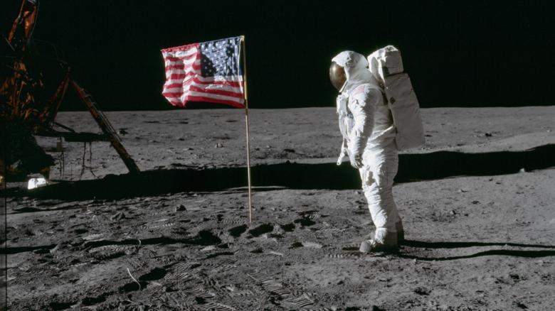

History
On July 20, 1969, Neil Armstrong and Edwin “Buzz” Aldrin became the first humans to ever land on the moon. 6 years later, Neil Armstrong became the first person to walk on the moon during the Apollo 11 mission.
Conspiracy
50 years later, many doubters of the moon landing believe that the U.S. government faked the landing because they were desperate to beat the Russians in The Space Race. Most reason that there was absolutely no way the N.A.S.A. could’ve gotten to the moon with how far behind they were compared to Russia. Others say that the tape of the landing was obviously staged -with the way the flag moved in the video, the shadows of the astronauts, and the lack of stars.